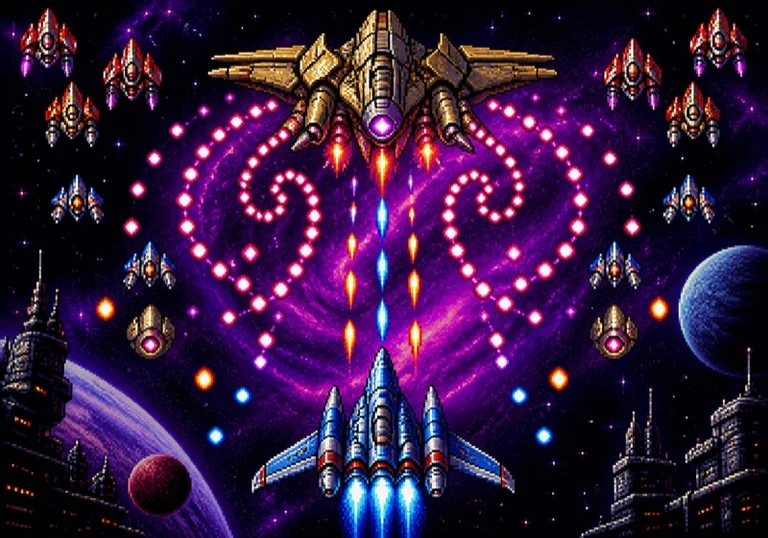

战机手动反击候选 r1 · 未完整真人验收 · 普通/护航成绩与静音另域，不读取或迁移旧记录；新短关与演练不记成绩 · 保留原海岸场景及r4奖励面板；新短关真实瞄准、布局与趣味未验
方向键与 WASD、空格/J 和按住开火可接力使用；松开一项不会取消仍按住的其他来源。暂停后请重新按下。运输机短关将导弹艇生命与运输机耐久、在途导弹、倒计时分行显示。保留中立冲刺修复；本版待实玩复测。
普通模式保留 · 可选固定短关候选
突击：立即清弹与攻击。护航：B只补一层盾，不清弹、不伤敌、不额外无敌；满盾不扣弹。护航成绩单独记录。
可选固定短关 · 不计分、不掉落、不进星港。运输机固定待援，耐久 3；导弹艇 HP45，32秒未击破即撤离。击破后仍须处理在途导弹；异常余弹至40秒仍未处理则结束为未完成。
开局原位置、散射 I、HP100、B×1，原移动、开火与冲刺。难度按钮不改变本短关参数。导弹 1HP、速度150，入场1.2秒首次发射，此后每2.4秒一枚，提前0.6秒亮出锁定线。
射击可截弹，也可用战机挡弹；护盾和冲刺只保护战机，运输机不共享。突击 B 清弹并伤艇10；护航 B 只换一层战机护盾。两种职责沿用上方选择。没有补给或换武器。
左手拖动，右手开火 · 击落载机
接住正确答案芯片 · 推进 8 次挑战首领
固定数据通道 · 芯片从附近空位接入
本测试版首局开场最多24秒有效交战时间按航段编排；答题切换不计时。S舰可选追击，增援减缓不代表清场安全。道路、厂房与停机坪仅为背景，不会碰撞。
WASD / 方向键移动 · 空格 / J 开火 · Shift 冲刺（7 秒）· B 爆弹 · P 暂停
红色散射、蓝色雷光、紫色追踪：同色晶体升一级，最高 III；满级再接保持 III。异色晶体改换武器并回到 I，旧等级不继承。本实验中，答对后的异色晶体放在侧方；不接可保留当前武器，主动侧移接取可换型。敌机掉落规则不变。
S 补给舰提供暴走；异色换型仍回 I，但保留当前暴走剩余时间，不延长或重置。错误芯片中断连击，结算可回看答案。
同选项只保留一片；空位不足会排队，未接到的芯片会再来。转屏时芯片完整回队后重新放行；空间不足会自动暂停，恢复空间后需点击继续。每题最多四组选项，正确和干扰项遵循同样的规则。
橙线是锁定预警，冲刺可穿弹；首领后选择强化。星港基础开火间隔不等于实测射速；雷光和暴走仍按原规则修正。反应堆只在本局保留，异色晶体仍会把武器等级重置到 I。
固定训练值 · 不写普通成绩、徽章或纪录
满血演练 · 不计纪录HP100、清场、安全出生；恢复首领入场配装、爆弹/护盾和冷却，不赠补给。不是原样回档。击破、死亡或撤离即结束，不进星港。
三项都附带：2秒无敌、冲刺立即可用，并进入下一航段。未列出的战机属性保持原规则。
按 P 或 Esc 继续